Chapter 1: The Study of Life¶
Introduction¶
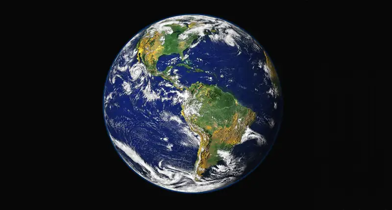
Viewed from space, Earth offers no clues about the diversity of life forms that reside there. Scientists believe that the first forms of life on Earth were microorganisms that existed for billions of years in the ocean before plants and animals appeared. The mammals, birds, and flowers so familiar to us are all relatively recent, originating 130 to 250 million years ago. The earliest representatives of the genus Homo, to which we belong, have inhabited this planet for only the last 2.5 million years, and only in the last 300,000 years have humans started looking like we do today.
1.1 The Science of Biology¶
Learning Objectives
By the end of this section, you will be able to do the following:
- Identify the shared characteristics of the natural sciences
- Summarize the steps of the scientific method
- Compare inductive reasoning with deductive reasoning
- Describe the goals of basic science and applied science
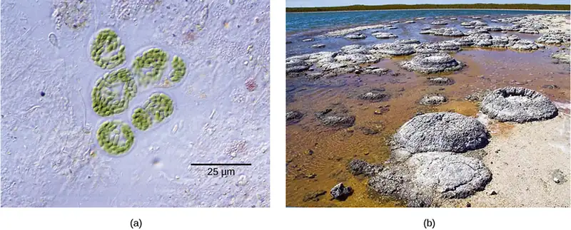
What is biology? In simple terms, biology is the study of life. This is a very broad definition because the scope of biology is vast. Biologists may study anything from the microscopic or submicroscopic view of a cell to ecosystems and the whole living planet (Figure 1.2). Listening to the daily news, you will quickly realize how many aspects of biology we discuss every day. For example, recent news topics include Escherichia coli (Figure 1.3) outbreaks in spinach and Salmonella contamination in peanut butter. Other subjects include efforts toward finding a cure for AIDS, Alzheimer’s disease, and cancer. On a global scale, many researchers are committed to finding ways to protect the planet, solve environmental issues, and reduce the effects of climate change. All of these diverse endeavors are related to different facets of the discipline of biology.
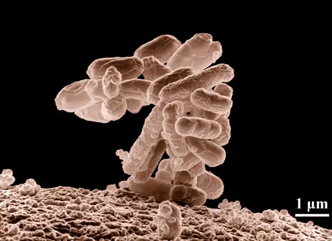
The Process of Science¶
Biology is a science, but what exactly is science? What does the study of biology share with other scientific disciplines? We can define science (from the Latin scientia, meaning “knowledge”) as knowledge that covers general truths or the operation of general laws, especially when acquired and tested by the scientific method. It becomes clear from this definition that applying scientific method plays a major role in science. The scientific method is a method of research with defined steps that include experiments and careful observation.
We will examine scientific method steps in detail later, but one of the most important aspects of this method is the testing of hypotheses by means of repeatable experiments. A hypothesis is a suggested explanation for an event, which one can test. Although using the scientific method is inherent to science, it is inadequate in determining what science is. This is because it is relatively easy to apply the scientific method to disciplines such as physics and chemistry, but when it comes to disciplines like archaeology, psychology, and geology, the scientific method becomes less applicable as repeating experiments becomes more difficult.
These areas of study are still sciences, however. Consider archaeology—even though one cannot perform repeatable experiments, hypotheses may still be supported. For instance, archaeologists can hypothesize that an ancient culture existed based on finding a piece of pottery. They could make further hypotheses about various characteristics of this culture, which could be correct or false through continued support or contradictions from other findings. A hypothesis may become a verified theory. A theory is a tested and confirmed explanation for observations or phenomena. Therefore, we may be better off to define science as fields of study that attempt to comprehend the nature of the universe.
Natural Sciences¶
What would you expect to see in a museum of natural sciences? Frogs? Plants? Dinosaur skeletons? Exhibits about how the brain functions? A planetarium? Gems and minerals? Maybe all of the above? Science includes such diverse fields as astronomy, biology, computer sciences, geology, logic, physics, chemistry, and mathematics (Figure 1.4). However, scientists consider those fields of science related to the physical world and its phenomena and processes natural sciences. Thus, a museum of natural sciences might contain any of the items listed above.
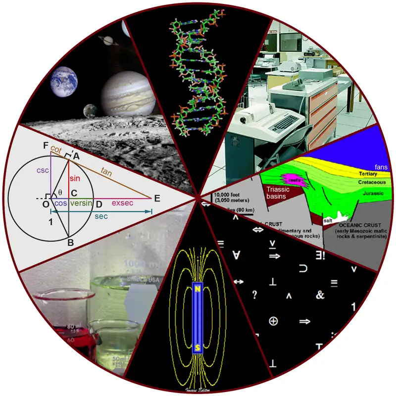
There is no complete agreement when it comes to defining what the natural sciences include, however. For some experts, the natural sciences are astronomy, biology, chemistry, earth science, and physics. Other scholars choose to divide natural sciences into life sciences, which study living things and include biology, and physical sciences, which study nonliving matter and include astronomy, geology, physics, and chemistry. Some disciplines such as biophysics and biochemistry build on both life and physical sciences and are interdisciplinary. Some refer to natural sciences as “hard science” because they rely on the use of quantitative data. Social sciences that study society and human behavior are more likely to use qualitative assessments to drive investigations and findings.
Not surprisingly, the natural science of biology has many branches or subdisciplines. Cell biologists study cell structure and function, while biologists who study anatomy investigate the structure of an entire organism. Those biologists studying physiology, however, focus on the internal functioning of an organism. Some areas of biology focus on only particular types of living things. For example, botanists explore plants, while zoologists specialize in animals.
Scientific Reasoning¶
One thing is common to all forms of science: an ultimate goal “to know.” Curiosity and inquiry are the driving forces for the development of science. Scientists seek to understand the world and the way it operates. To do this, they use two methods of logical thinking: inductive reasoning and deductive reasoning.
Inductive reasoning is a form of logical thinking that uses related observations to arrive at a general conclusion. This type of reasoning is common in descriptive science. A life scientist such as a biologist makes observations and records them. These data can be qualitative or quantitative, and one can supplement the raw data with drawings, pictures, photos, or videos. From many observations, the scientist can infer conclusions (inductions) based on evidence. Inductive reasoning involves formulating generalizations inferred from careful observation and analyzing a large amount of data. Brain studies provide an example. In this type of research, scientists observe many live brains while people are engaged in a specific activity, such as viewing images of food. The scientist then predicts the part of the brain that “lights up” during this activity to be the part controlling the response to the selected stimulus, in this case, images of food. Excess absorption of radioactive sugar derivatives by active areas of the brain causes the various areas to "light up". Scientists use a scanner to observe the resultant increase in radioactivity. Then, researchers can stimulate that part of the brain to see if similar responses result.
Deductive reasoning or deduction is the type of logic used in hypothesis-based science. In deductive reasoning, the pattern of thinking moves in the opposite direction as compared to inductive reasoning. Deductive reasoning is a form of logical thinking that uses a general principle or law to predict specific results. From those general principles, a scientist can deduce and predict the specific results that would be valid as long as the general principles are valid. Studies in climate change can illustrate this type of reasoning. For example, scientists may predict that if the climate becomes warmer in a particular region, then the distribution of plants and animals should change.
Both types of logical thinking are related to the two main pathways of scientific study: descriptive science and hypothesis-based science. Descriptive (or discovery) science, which is usually inductive, aims to observe, explore, and discover, while hypothesis-based science, which is usually deductive, begins with a specific question or problem and a potential answer or solution that one can test. The boundary between these two forms of study is often blurred, and most scientific endeavors combine both approaches. The fuzzy boundary becomes apparent when thinking about how easily observation can lead to specific questions. For example, a gentleman in the 1940s observed that the burr seeds that stuck to his clothes and his dog’s fur had a tiny hook structure. On closer inspection, he discovered that the burrs’ gripping device was more reliable than a zipper. He eventually experimented to find the best material that acted similarly, and produced the hook-and-loop fastener popularly known today as Velcro. Descriptive science and hypothesis-based science are in continuous dialogue.
The Scientific Method¶
Biologists study the living world by posing questions about it and seeking science-based responses. Known as scientific method, this approach is common to other sciences as well. The scientific method was used even in ancient times, but England’s Sir Francis Bacon (1561–1626) first documented it (Figure 1.5). He set up inductive methods for scientific inquiry. The scientific method is not used only by biologists; researchers from almost all fields of study can apply it as a logical, rational problem-solving method.
The scientific process typically starts with an observation (often a problem to solve) that leads to a question. Let’s think about a simple problem that starts with an observation and apply the scientific method to solve the problem. One Monday morning, a student arrives at class and quickly discovers that the classroom is too warm. That is an observation that also describes a problem: the classroom is too warm. The student then asks a question: “Why is the classroom so warm?”
Proposing a Hypothesis¶
Recall that a hypothesis is a suggested explanation that one can test. To solve a problem, one can propose several hypotheses. For example, one hypothesis might be, “The classroom is warm because no one turned on the air conditioning.” However, there could be other responses to the question, and therefore one may propose other hypotheses. A second hypothesis might be, “The classroom is warm because there is a power failure, and so the air conditioning doesn’t work.”
Once one has selected a hypothesis, the student can make a prediction. A prediction is similar to a hypothesis but it typically has the format “If . . . then . . . .” For example, the prediction for the first hypothesis might be, “If the student turns on the air conditioning, then the classroom will no longer be too warm.”
Testing a Hypothesis¶
A valid hypothesis must be testable. It should also be falsifiable, meaning that experimental results can disprove it. Importantly, science does not claim to “prove” anything because scientific understandings are always subject to modification with further information. This step—openness to disproving ideas—is what distinguishes sciences from non-sciences. The presence of the supernatural, for instance, is neither testable nor falsifiable. To test a hypothesis, a researcher will conduct one or more experiments designed to eliminate one or more of the hypotheses. Each experiment will have one or more variables and one or more controls. A variable is any part of the experiment that can vary or change during the experiment. The control group contains every feature of the experimental group except it is not given the manipulation that the researcher hypothesizes. Therefore, if the experimental group's results differ from the control group, the difference must be due to the hypothesized manipulation, rather than some outside factor. Look for the variables and controls in the examples that follow. To test the first hypothesis, the student would find out if the air conditioning is on. If the air conditioning is turned on but does not work, there should be another reason, and the student should reject this hypothesis. To test the second hypothesis, the student could check if the lights in the classroom are functional. If so, there is no power failure and the student should reject this hypothesis. The students should test each hypothesis by carrying out appropriate experiments. Be aware that rejecting one hypothesis does not determine whether or not one can accept the other hypotheses. It simply eliminates one hypothesis that is not valid (Figure 1.6). Using the scientific method, the student rejects the hypotheses that are inconsistent with experimental data.
While this “warm classroom” example is based on observational results, other hypotheses and experiments might have clearer controls. For instance, a student might attend class on Monday and realize she had difficulty concentrating on the lecture. One observation to explain this occurrence might be, “When I eat breakfast before class, I am better able to pay attention.” The student could then design an experiment with a control to test this hypothesis.
In hypothesis-based science, researchers predict specific results from a general premise. We call this type of reasoning deductive reasoning: deduction proceeds from the general to the particular. However, the reverse of the process is also possible: sometimes, scientists reach a general conclusion from a number of specific observations. We call this type of reasoning inductive reasoning, and it proceeds from the particular to the general. Researchers often use inductive and deductive reasoning in tandem to advance scientific knowledge (Figure 1.7). In recent years a new approach of testing hypotheses has developed as a result of an exponential growth of data deposited in various databases. Using computer algorithms and statistical analyses of data in databases, a new field of so-called "data research" (also referred to as "in silico" research) provides new methods of data analyses and their interpretation. This will increase the demand for specialists in both biology and computer science, a promising career opportunity.
Visual Connection
![A flow chart shows the steps in the scientific method. In step 1, an observation is made. In step 2, a question is asked about the observation. In step 3, an answer to the question, called a hypothesis, is proposed. In step 4, a prediction is made based on the hypothesis. In step 5, an experiment is done to test the prediction. In step 6, the results are analyzed to determine whether or not the hypothesis is correct. If the hypothesis is incorrect, another hypothesis is made. In either case, the results are reported.](img/figure-01-01-05-9aa6.webp)
In the example below, the scientific method is used to solve an everyday problem. Match the scientific method steps (numbered items) with the process of solving the everyday problem (lettered items). Based on the results of the experiment, is the hypothesis correct? If it is incorrect, propose some alternative hypotheses.
| 1. Observation | a. There is something wrong with the electrical outlet. |
| 2. Question | b. If something is wrong with the outlet, my coffeemaker also won’t work when plugged into it. |
| 3. Hypothesis (answer) | c. My toaster doesn’t toast my bread. |
| 4. Prediction | d. I plug my coffee maker into the outlet. |
| 5. Experiment | e. My coffeemaker works. |
| 6. Result | f. Why doesn’t my toaster work? |
Visual Connection
![Diagram defines two types of reasoning. In inductive reasoning, a general conclusion is drawn from a number of observations. In deductive reasoning, specific results are predicted from a general premise. An example of inductive reasoning is given. In this example, three observations are made: (1) Members of a species are not all the same. (2) Individuals compete for resources. (3) Species are generally adapted to their environment. From these observations, the following conclusion is drawn: Individuals most adapted to their environment are more likely to survive and pass their traits on to the next generation. An example of deductive reasoning is also given. In this example, the general premise is that individuals most adapted to their environment are more likely to survive and pass their traits on to the next generation. From this premise, it is predicted that, if global climate change causes the temperature in an ecosystem to increase, those individuals better adapted to a warmer climate will outcompete those that are not.](img/figure-01-01-09new.webp)
Decide if each of the following is an example of inductive or deductive reasoning.
- All flying birds and insects have wings. Birds and insects flap their wings as they move through the air. Therefore, wings enable flight.
- Insects generally survive mild winters better than harsh ones. Therefore, insect pests will become more problematic if global temperatures increase.
- Chromosomes, the carriers of DNA, are distributed evenly between the daughter cells during cell division. Therefore, each daughter cell will have the same chromosome set as the mother cell.
- Animals as diverse as humans, insects, and wolves all exhibit social behavior. Therefore, social behavior must have an evolutionary advantage.
The scientific method may seem too rigid and structured. It is important to keep in mind that, although scientists often follow this sequence, there is flexibility. Sometimes an experiment leads to conclusions that favor a change in approach. Often, an experiment brings entirely new scientific questions to the puzzle. Many times, science does not operate in a linear fashion. Instead, scientists continually draw inferences and make generalizations, finding patterns as their research proceeds. Scientific reasoning is more complex than the scientific method alone suggests. Notice, too, that we can apply the scientific method to solving problems that aren’t necessarily scientific in nature.
Two Types of Science: Basic Science and Applied Science¶
The scientific community has been debating for the last few decades about the value of different types of science. Is it valuable to pursue science for the sake of simply gaining knowledge, or does scientific knowledge only have worth if we can apply it to solving a specific problem or to bettering our lives? This question focuses on the differences between two types of science: basic science and applied science.
Basic science or “pure” science seeks to expand knowledge regardless of the short-term application of that knowledge. It is not focused on developing a product or a service of immediate public or commercial value. The immediate goal of basic science is knowledge for knowledge’s sake, although this does not mean that, in the end, it may not result in a practical application.
In contrast, applied science or “technology,” aims to use science to solve real-world problems, making it possible, for example, to improve a crop yield, find a cure for a particular disease, or save animals threatened by a natural disaster (Figure 1.8). In applied science, the problem is usually defined for the researcher.
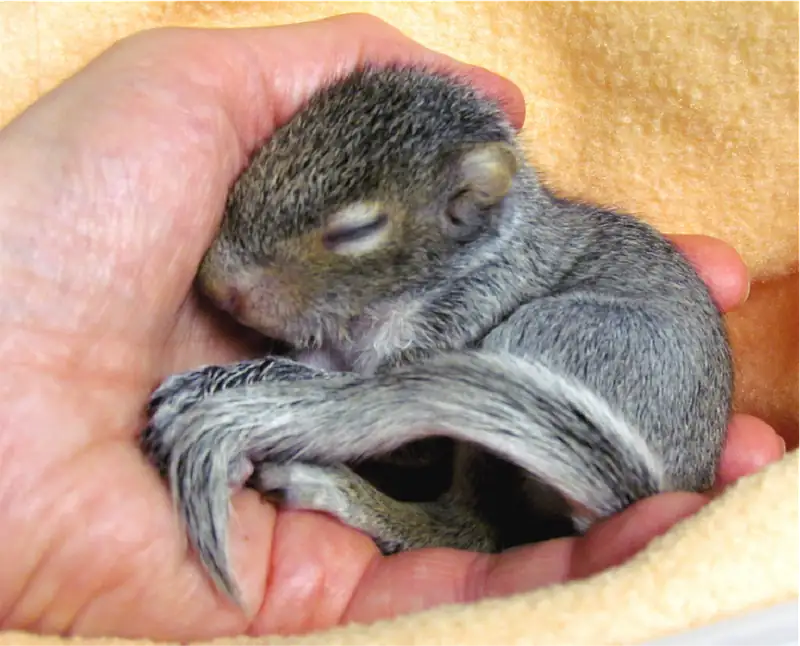
Some individuals may perceive applied science as “useful” and basic science as “useless.” A question these people might pose to a scientist advocating knowledge acquisition would be, “What for?” However, a careful look at the history of science reveals that basic knowledge has resulted in many remarkable applications of great value. Many scientists think that a basic understanding of science is necessary before researchers develop an application, therefore, applied science relies on the results that researchers generate through basic science. Other scientists think that it is time to move on from basic science in order to find solutions to actual problems. Both approaches are valid. It is true that there are problems that demand immediate attention; however, scientists would find few solutions without the help of the wide knowledge foundation that basic science generates.
One example of how basic and applied science can work together to solve practical problems occurred after the discovery of DNA structure led to an understanding of the molecular mechanisms governing DNA replication. DNA strands, unique in every human, are in our cells, where they provide the instructions necessary for life. When DNA replicates, it produces new copies of itself, shortly before a cell divides. Understanding DNA replication mechanisms enabled scientists to develop laboratory techniques that researchers now use to identify genetic diseases, pinpoint individuals who were at a crime scene, and determine paternity. Without basic science, it is unlikely that applied science could exist.
Another example of the link between basic and applied research is the Human Genome Project, a study in which researchers analyzed and mapped each human chromosome to determine the precise sequence of DNA subunits and each gene's exact location. (The gene is the basic unit of heredity represented by a specific DNA segment that codes for a functional molecule. An individual’s complete collection of genes is their genome.) Researchers have studied other less complex organisms as part of this project in order to gain a better understanding of human chromosomes. The Human Genome Project (Figure 1.9) relied on basic research with simple organisms and, later, with the human genome. An important end goal eventually became using the data for applied research, seeking cures and early diagnoses for genetically related diseases.
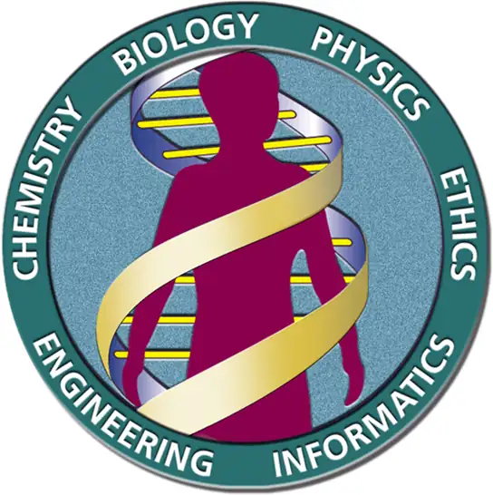
While scientists usually carefully plan research efforts in both basic science and applied science, note that some discoveries are made by serendipity, that is, by means of a fortunate accident or a lucky surprise. Scottish biologist Alexander Fleming discovered penicillin when he accidentally left a petri dish of Staphylococcus bacteria open. An unwanted mold grew on the dish, killing the bacteria. Fleming's curiosity to investigate the reason behind the bacterial death, followed by his experiments, led to the discovery of the antibiotic penicillin, which is produced by the fungus Penicillium. Even in the highly organized world of science, luck—when combined with an observant, curious mind—can lead to unexpected breakthroughs.
Reporting Scientific Work¶
Whether scientific research is basic science or applied science, scientists must share their findings in order for other researchers to expand and build upon their discoveries. Collaboration with other scientists—when planning, conducting, and analyzing results—is important for scientific research. For this reason, important aspects of a scientist’s work are communicating with peers and disseminating results to peers. Scientists can share results by presenting them at a scientific meeting or conference, but this approach can reach only the select few who are present. Instead, most scientists present their results in peer-reviewed manuscripts that are published in scientific journals. Peer-reviewed manuscripts are scientific papers that a scientist’s colleagues or peers review. These colleagues are qualified individuals, often experts in the same research area, who judge whether or not the scientist’s work is suitable for publication. The process of peer review helps to ensure that the research in a scientific paper or grant proposal is original, significant, logical, and thorough. Grant proposals, which are requests for research funding, are also subject to peer review. Scientists publish their work so other scientists can reproduce their experiments under similar or different conditions to expand on the findings.
A scientific paper is very different from creative writing. Although creativity is required to design experiments, there are fixed guidelines when it comes to presenting scientific results. First, scientific writing must be brief, concise, and accurate. A scientific paper needs to be succinct but detailed enough to allow peers to reproduce the experiments.
The scientific paper consists of several specific sections—introduction, materials and methods, results, and discussion. This structure is sometimes called the “IMRaD” format. There are usually acknowledgment and reference sections as well as an abstract (a concise summary) at the beginning of the paper. There might be additional sections depending on the type of paper and the journal where it will be published. For example, some review papers require an outline.
The introduction starts with brief, but broad, background information about what is known in the field. A good introduction also gives the rationale of the work. It justifies the work carried out and also briefly mentions the end of the paper, where the researcher will present the hypothesis or research question driving the research. The introduction refers to the published scientific work of others and therefore requires citations following the style of the journal. Using the work or ideas of others without proper citation is plagiarism.
The materials and methods section includes a complete and accurate description of the substances the researchers use, and the method and techniques they use to gather data. The description should be thorough enough to allow another researcher to repeat the experiment and obtain similar results, but it does not have to be verbose. This section will also include information on how the researchers made measurements and the types of calculations and statistical analyses they used to examine raw data. Although the materials and methods section gives an accurate description of the experiments, it does not discuss them.
Some journals require a results section followed by a discussion section, but it is more common to combine both. If the journal does not allow combining both sections, the results section simply narrates the findings without any further interpretation. The researchers present results with tables or graphs, but they do not present duplicate information. In the discussion section, the researchers will interpret the results, describe how variables may be related, and attempt to explain the observations. It is indispensable to conduct an extensive literature search to put the results in the context of previously published scientific research. Therefore, researchers include proper citations in this section as well.
Finally, the conclusion section summarizes the importance of the experimental findings. While the scientific paper almost certainly answers one or more scientific questions that the researchers stated, any good research should lead to more questions. Therefore, a well-done scientific paper allows the researchers and others to continue and expand on the findings.
Review articles do not follow the IMRAD format because they do not present original scientific findings, or primary literature. Instead, they summarize and comment on findings that were published as primary literature and typically include extensive reference sections.
Scientific Ethics¶
Scientists must ensure that their efforts do not cause undue damage to humans, animals, or the environment. They also must ensure that their research and communications are free of bias and that they properly balance financial, legal, safety, replicability, and other considerations. All scientists -- and many people in other fields -- have these ethical obligations, but those in the life sciences have a particular obligation because their research may involve people or other living things. Bioethics is thus an important and continually evolving field, in which researchers collaborate with other thinkers and organizations. They work to define guidelines for current practice, and also continually consider new developments and emerging technologies in order to form answers for the years and decades to come.
For example, bioethicists may examine the implications of gene editing technologies, including the ability to create organisms that may displace others in the environment, as well as the ability to “design” human beings. In that effort, ethicists will likely seek to balance the positive outcomes -- such as improved therapies or prevention of certain illnesses -- with negative outcomes.
Unfortunately, the emergence of bioethics as a field came after a number of clearly unethical practices, where biologists did not treat research subjects with dignity and in some cases did them harm. In the 1932 Tuskegee syphilis study, 399 African American men were diagnosed with syphilis but were never informed that they had the disease, leaving them to live with and pass on the illness to others. Doctors even withheld proven medications because the goal of the study was to understand the impact of untreated syphilis on Black men.
While the decisions made in the Tuskegee study are unjustifiable, some decisions are genuinely difficult to make. Bioethicists work to establish moral and dignifying approaches before such decisions come to pass. For example, doctors rely on artificial intelligence and robotics for medical diagnosis and treatment; in the near future, even more responsibility will lie with machines. Who will be responsible for medical decisions? Who will explain to families if a procedure doesn’t go as planned? And, since such treatments will likely be expensive, who will decide who has access to them and who does not? These are all questions bioethicists seek to answer, and are the types of considerations that all scientific researchers take into account when designing and conducting studies.
Bioethics are not simple, and often leave scientists balancing benefits with harm. In this text and course, you will discuss medical discoveries, vaccines, and research that, at their core, have an ethical complexity or, in the view of many, an ethical lapse. In 1951, Henrietta Lacks, a 30-year-old African American woman, was diagnosed with cervical cancer at Johns Hopkins Hospital. Unique characteristics of her illnesses gave her cells the ability to divide continuously, essentially making them “immortal.” Without her knowledge or permission, researchers took samples of her cells and with them created the immortal HeLa cell line. These cells have contributed to major medical discoveries, including the polio vaccine. Many researchers mentioned in subsequent sections of the text relied on HeLa cell research as at least a component of their work related to cancer, AIDS, cell aging, and even very recently in COVID-19 research.
Today, harvesting tissue or organs from a dying patient without consent is not only considered unethical but illegal, regardless of whether such an act could save other patients’ lives. Is it ethical, then, for scientists to continue to use Lacks’s tissues for research, even though they were obtained illegally by today’s standards? Should Lacks be mentioned as a contributor to the research based on her cells, and should she be cited in the several Nobel Prizes that have been awarded through such work? Finally, should medical companies be obligated to pay Lacks’ family (which had financial difficulties) a portion of the billions of dollars in revenue earned through medicines that benefited from HeLa cell research? How would Henrietta Lacks feel about this? Because she was never asked, we will never know.
To avoid such situations, the role of ethics in scientific research is to ask such questions before, during, and after research or practice takes place, as well as to adhere to established professional principles and consider the dignity and safety of all organisms involved or affected by the work.
1.2 Themes and Concepts of Biology¶
Learning Objectives
By the end of this section, you will be able to do the following:
- Identify and describe the properties of life
- Describe the levels of organization among living things
- Recognize and interpret a phylogenetic tree
- List examples of different subdisciplines in biology
Biology is the science that studies life, but what exactly is life? This may sound like a silly question with an obvious response, but it is not always easy to define life. For example, a branch of biology called virology studies viruses, which exhibit some of the characteristics of living entities but lack others. Although viruses can attack living organisms, cause diseases, and even reproduce, they do not meet the criteria that biologists use to define life. Consequently, virologists are not biologists, strictly speaking. Similarly, some biologists study the early molecular evolution that gave rise to life. Since the events that preceded life are not biological events, these scientists are also excluded from biology in the strict sense of the term.
From its earliest beginnings, biology has wrestled with three questions: What are the shared properties that make something “alive”? Once we know something is alive, how do we find meaningful levels of organization in its structure? Finally, when faced with the remarkable diversity of life, how do we organize the different kinds of organisms so that we can better understand them? As scientists discover new organisms every day, biologists continue to seek answers to these and other questions.
Properties of Life¶
All living organisms share several key characteristics or functions: order, sensitivity or response to the environment, reproduction, adaptation, growth and development, regulation/homeostasis, energy processing, and evolution. When viewed together, these eight characteristics serve to define life.
Order¶
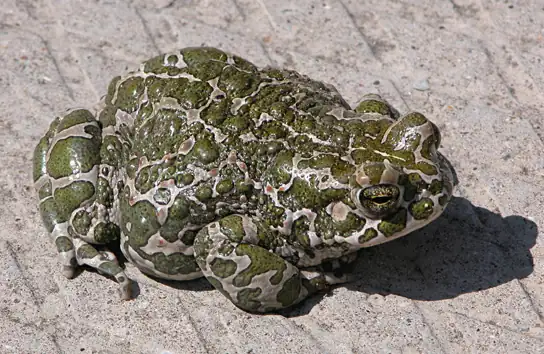
Organisms are highly organized, coordinated structures that consist of one or more cells. Even very simple, single-celled organisms are remarkably complex: inside each cell, atoms form molecules. These in turn form cell organelles and other cellular inclusions. In multicellular organisms (Figure 1.10), similar cells form tissues. Tissues, in turn, collaborate to create organs (body structures with a distinct function). Organs work together to form organ systems.
Sensitivity or Response to Stimuli¶
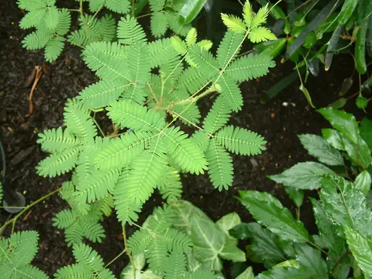
Organisms respond to diverse stimuli. For example, plants can bend toward a source of light, climb on fences and walls, or respond to touch (Figure 1.11). Even tiny bacteria can move toward or away from chemicals (a process called chemotaxis) or light (phototaxis). Movement toward a stimulus is a positive response, while movement away from a stimulus is a negative response.
Interactive
Watch this video to see how plants respond to a stimulus—from opening to light, to wrapping a tendril around a branch, to capturing prey.
Reproduction¶
Single-celled organisms reproduce by first duplicating their DNA, and then dividing it equally as the cell prepares to divide to form two new cells. Multicellular organisms often produce specialized reproductive cells—gametes and oocyte and sperm cells. After fertilization (the fusion of an oocyte and a sperm cell), a new individual develops. When reproduction occurs, DNA containing genes are passed along to an organism’s offspring. These genes ensure that the offspring will belong to the same species and will have similar characteristics, such as size and shape.
Adaptation¶
All living organisms exhibit a “fit” to their environment. Biologists refer to this fit as adaptation, and it is a consequence of evolution by natural selection, which operates in every lineage of reproducing organisms. Examples of adaptations are diverse and unique, from heat-resistant Archaea that live in boiling hotsprings to the tongue length of a nectar-feeding moth that matches the size of the flower from which it feeds. Adaptations enhance the reproductive potential of the individuals exhibiting them, including their ability to survive to reproduce. Adaptations are not constant. As an environment changes, natural selection causes the characteristics of the individuals in a population to track those changes.
Growth and Development¶
Organisms grow and develop as a result of genes providing specific instructions that will direct cellular growth and development. This ensures that a species’ young (Figure 1.12) will grow up to exhibit many of the same characteristics as its parents.
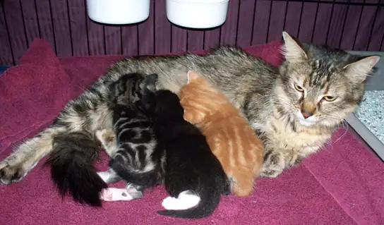
Regulation/Homeostasis¶
Even the smallest organisms are complex and require multiple regulatory mechanisms to coordinate internal functions, respond to stimuli, and cope with environmental stresses. Homeostasis (literally, “steady state”) refers to the relatively stable internal environment required to maintain life. Two examples of internal functions regulated in an organism are nutrient transport and blood flow. Organs (groups of tissues working together) perform specific functions, such as carrying oxygen throughout the body, removing wastes, delivering nutrients to every cell, and cooling the body.
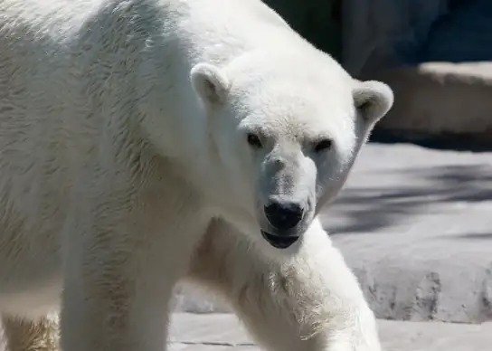
In order to function properly, cells require appropriate conditions such as proper temperature, pH, and appropriate concentration of diverse chemicals. These conditions may, however, change from one moment to the next. Organisms are able to maintain homeostatic internal conditions within a narrow range almost constantly, despite environmental changes, by activation of regulatory mechanisms. For example, an organism needs to regulate body temperature through the thermoregulation process. Organisms that live in cold climates, such as the polar bear (Figure 1.13), have body structures that help them withstand low temperatures and conserve body heat. Structures that aid in this type of insulation include fur, feathers, blubber, and fat. In hot climates, organisms have methods (such as perspiration in humans or panting in dogs) that help them to shed excess body heat.
Energy Processing¶
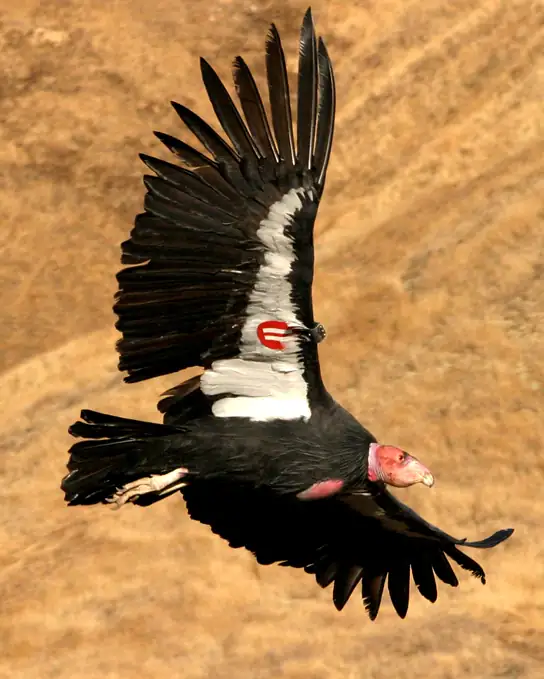
All organisms use a source of energy for their metabolic activities. Some organisms capture energy from the sun and convert it into chemical energy in food. Others use chemical energy in molecules they take in as food (Figure 1.14).
Evolution¶
The diversity of life on Earth is a result of mutations, or random changes in hereditary material over time. These mutations allow the possibility for organisms to adapt to a changing environment. An organism that evolves characteristics fit for the environment will have greater reproductive success, subject to the forces of natural selection.
Levels of Organization of Living Things¶
Living things are highly organized and structured, following a hierarchy that we can examine on a scale from small to large. The atom is the smallest and most fundamental unit of matter that retains the properties of an element. It consists of a nucleus surrounded by electrons. Atoms form molecules. A molecule is a chemical structure consisting of at least two atoms held together by one or more chemical bonds. Many molecules that are biologically important are macromolecules, large molecules that are typically formed by polymerization (a polymer is a large molecule that is made by combining smaller units called monomers, which are simpler than macromolecules). An example of a macromolecule is deoxyribonucleic acid (DNA) (Figure 1.15), which contains the instructions for the structure and functioning of all living organisms.
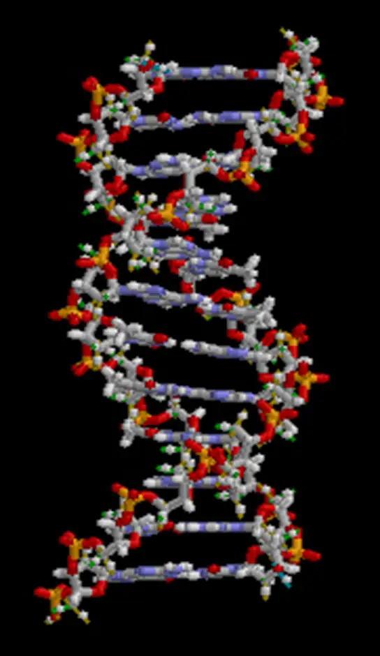
Interactive
Watch this video that animates the three-dimensional structure of the DNA molecule in Figure 1.15.
Some cells contain aggregates of macromolecules surrounded by membranes. We call these organelles. Organelles are small structures that exist within cells. Examples of organelles include mitochondria and chloroplasts, which carry out indispensable functions: mitochondria process energy to power the cell, while chloroplasts enable green plants to utilize the energy in sunlight to make sugars. All living things are made of cells. The cell itself is the smallest fundamental unit of structure and function in living organisms. (This requirement is why scientists do not consider viruses living: they are not made of cells. To make new viruses, they have to invade and hijack the reproductive mechanism of a living cell. Only then can they obtain the materials they need to reproduce.) Some organisms consist of a single cell and others are multicellular. Scientists classify cells as prokaryotic or eukaryotic. Prokaryotes are single-celled or colonial organisms that do not have membrane-bound nuclei. In contrast, the cells of eukaryotes do have membrane-bound organelles and a membrane-bound nucleus.
In larger organisms, cells combine to make tissues, which are groups of similar cells carrying out similar or related functions. Organs are collections of tissues grouped together performing a common function. Organs are present not only in animals but also in plants. An organ system is a higher level of organization that consists of functionally related organs. Mammals have many organ systems. For instance, the circulatory system transports blood through the body and to and from the lungs. It includes organs such as the heart and blood vessels. Organisms are individual living entities. For example, each tree in a forest is an organism. Single-celled prokaryotes and single-celled eukaryotes are also organisms, which biologists typically call microorganisms.
Biologists collectively call all the individuals of a species living within a specific area a population. For example, a forest may include many pine trees, which represent the population of pine trees in this forest. Different populations may live in the same specific area. For example, the forest with the pine trees includes populations of flowering plants, insects, and microbial populations. A community is the sum of populations inhabiting a particular area. For instance, all of the trees, flowers, insects, and other populations in a forest form the forest’s community. The forest itself is an ecosystem. An ecosystem consists of all the living things in a particular area together with the abiotic, nonliving parts of that environment such as nitrogen in the soil or rain water. At the highest level of organization (Figure 1.16), the biosphere is the collection of all ecosystems, and it represents the zones of life on Earth. It includes land, water, and even the atmosphere to a certain extent.
Visual Connection
![A flow chart shows the hierarchy of living organisms. From smallest to largest, this hierarchy includes: (1) Organelles, such as nuclei, that exist inside cells. (2) Cells, such as a white blood cell. (3) Tissues, such as human skin tissue. (4) Organs such as the stomach make up the human digestive system, an example of an organ system. (5) Organisms, populations, and communities. In a forest, each pine tree is an organism. Together, all the pine trees make up a population. All the plant and animal species in the forest comprise a community. (6) Ecosystems: the coastal ecosystem in the Southeastern United States includes living organisms and the environment in which they live. (7) The biosphere: encompasses all the ecosystems on Earth.](img/figure-01-02-15.webp)
Which of the following statements is false?
- Tissues exist within organs which exist within organ systems.
- Communities exist within populations which exist within ecosystems.
- Organelles exist within cells which exist within tissues.
- Communities exist within ecosystems which exist in the biosphere.
The Diversity of Life¶
The fact that biology, as a science, has such a broad scope has to do with the tremendous diversity of life on earth. The source of this diversity is evolution, the process of gradual change in a population or species over time. Evolutionary biologists study the evolution of living things in everything from the microscopic world to ecosystems.
A phylogenetic tree (Figure 1.17) can summarize the evolution of various life forms on Earth. It is a diagram showing the evolutionary relationships among biological species based on similarities and differences in genetic or physical traits or both. Nodes and branches comprise a phylogenetic tree. The internal nodes represent ancestors and are points in evolution when, based on scientific evidence, researchers believe an ancestor has diverged to form two new species. In some phylogenetic trees, the length of each branch might be proportional to the time elapsed since the split.
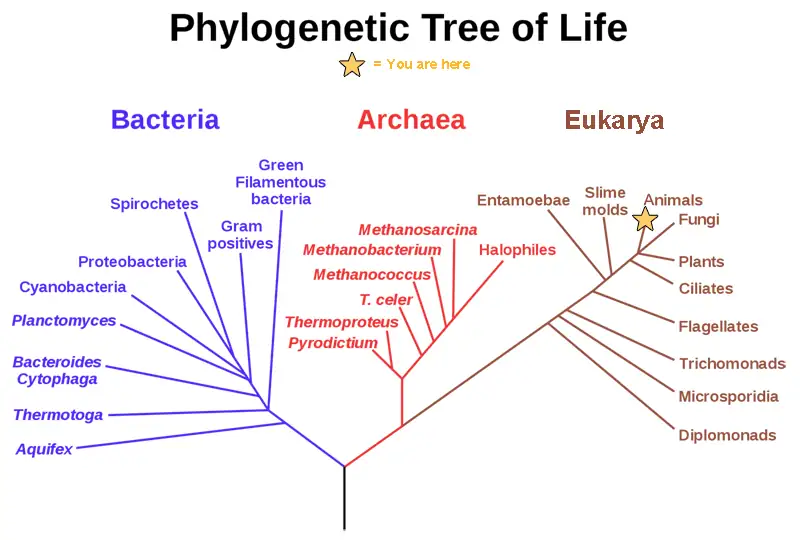
Evolution Connection: Carl Woese and the Phylogenetic Tree
In the past, biologists grouped living organisms into six kingdoms—animalia, plantae, fungi, protista, archea, and bacteria. They based the organizational scheme mainly on physical features, as opposed to physiology, biochemistry, or molecular biology, all of which modern systematics use. American microbiologist Carl Woese's pioneering work in the early 1970s has shown, however, that life on Earth has evolved along three lineages, now called domains—Bacteria, Archaea, and Eukarya. The first two are prokaryotic cells with microbes that lack membrane-enclosed nuclei and organelles. The third domain contains the eukaryotes and includes unicellular and multicellular microorganisms (protists), together with the three remaining kingdoms (fungi, plants, and animals). Woese defined Archaea as a new domain, and this resulted in a new taxonomic tree (Figure 1.17). Many organisms belonging to the Archaea domain live under extreme conditions and are called extremophiles. To construct his tree, Woese used genetic relationships rather than similarities based on morphology (shape).
Woese constructed his tree from universally distributed comparative gene sequencing that are present in every organism, and conserved (meaning that these genes have remained essentially unchanged throughout evolution). Woese’s approach was revolutionary because comparing physical features are insufficient to differentiate between the prokaryotes that appear fairly similar in spite of their tremendous biochemical diversity and genetic variability (Figure 1.18). Comparing rRNA sequences provided Woese with a sensitive device that revealed the extensive variability of prokaryotes, and which justified separating the prokaryotes into two domains: bacteria and archaea.
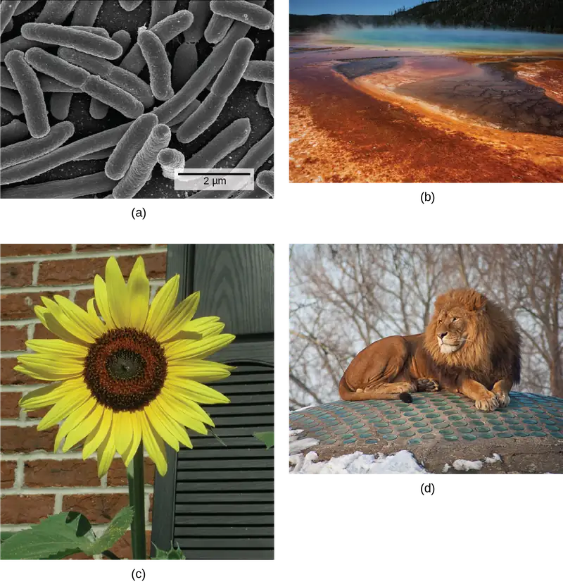
Branches of Biological Study¶
The scope of biology is broad and therefore contains many branches and subdisciplines. Biologists may pursue one of those subdisciplines and work in a more focused field. For instance, molecular biology and biochemistry study biological processes at the molecular and chemical level, including interactions among molecules such as DNA, RNA, and proteins, as well as the way they are regulated. Microbiology, the study of microorganisms, is the study of the structure and function of single-celled organisms. It is quite a broad branch itself, and depending on the subject of study, there are also microbial physiologists, ecologists, and geneticists, among others.
Career Connection: Forensic Scientist
Forensic science is the application of science to answer questions related to the law. Biologists as well as chemists and biochemists can be forensic scientists. Forensic scientists provide scientific evidence for use in courts, and their job involves examining trace materials associated with crimes. Interest in forensic science has increased in the last few years, possibly because of popular television shows that feature forensic scientists on the job. Also, developing molecular techniques and establishing DNA databases have expanded the types of work that forensic scientists can do. Their job activities are primarily related to crimes against people such as murder, rape, and assault. Their work involves analyzing samples such as hair, blood, and other body fluids and also processing DNA (Figure 1.19) found in many different environments and materials. Forensic scientists also analyze other biological evidence left at crime scenes, such as insect larvae or pollen grains. Students who want to pursue careers in forensic science will most likely have to take chemistry and biology courses as well as some intensive math courses.
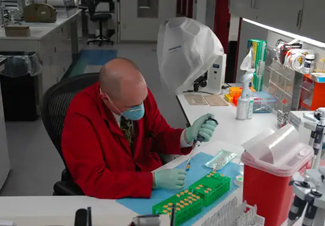
Another field of biological study, neurobiology, studies the biology of the nervous system, and although it is a branch of biology, it is also an interdisciplinary field of study known as neuroscience. Because of its interdisciplinary nature, this subdiscipline studies different nervous system functions using molecular, cellular, developmental, medical, and computational approaches.
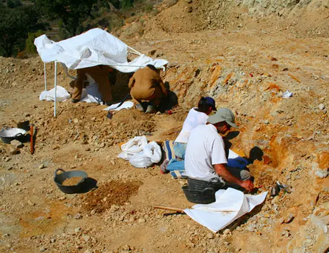
Paleontology, another branch of biology, uses fossils to study life’s history (Figure 1.20). Zoology and botany are the study of animals and plants, respectively. Biologists can also specialize as biotechnologists, ecologists, or physiologists, to name just a few areas. This is just a small sample of the many fields that biologists can pursue.
Biology is the culmination of the achievements of the natural sciences from their inception to today. Excitingly, it is the cradle of emerging sciences, such as the biology of brain activity, genetic engineering of custom organisms, and the biology of evolution that uses the laboratory tools of molecular biology to retrace the earliest stages of life on Earth. A scan of news headlines—whether reporting on immunizations, a newly discovered species, sports doping, or a genetically-modified food—demonstrates the way biology is active in and important to our everyday world.
Chapter Review¶
Key Terms¶
- abstract
- opening section of a scientific paper that summarizes the research and conclusions
- applied science
- form of science that aims to solve real-world problems
- atom
- smallest and most fundamental unit of matter that retains the properties of an element
- basic science
- science that seeks to expand knowledge and understanding regardless of the short-term application of that knowledge
- biochemistry
- study of the chemistry of biological organisms
- biology
- the study of life
- biosphere
- collection of all the ecosystems on Earth
- botany
- study of plants
- cell
- smallest fundamental unit of structure and function in living things
- community
- set of populations inhabiting a particular area
- conclusion
- section of a scientific paper that summarizes the importance of the experimental findings
- control
- part of an experiment that does not change during the experiment
- deductive reasoning
- form of logical thinking that uses a general inclusive statement to predict specific results
- descriptive science
- (also, discovery science) form of science that aims to observe, explore, and investigate
- discussion
- section of a scientific paper in which the author interprets experimental results, describes how variables may be related, and attempts to explain the phenomenon in question
- ecosystem
- all the living things in a particular area together with the abiotic, nonliving parts of that environment
- eukaryote
- organism with cells that have nuclei and membrane-bound organelles
- evolution
- the process of gradual change in a population or species over time
- falsifiable
- able to be disproven by experimental results
- homeostasis
- ability of an organism to maintain constant internal conditions
- hypothesis
- suggested explanation for an observation, which one can test
- hypothesis-based science
- form of science that begins with a specific question and potential testable answers
- inductive reasoning
- form of logical thinking that uses related observations to arrive at a general conclusion
- introduction
- opening section of a scientific paper, which provides background information about what was known in the field prior to the research reported in the paper
- life science
- field of science, such as biology, that studies living things
- macromolecule
- large molecule, typically formed by the joining of smaller molecules
- materials and methods
- section of a scientific paper that includes a complete description of the substances, methods, and techniques that the researchers used to gather data
- microbiology
- study of the structure and function of microorganisms
- molecular biology
- study of biological processes and their regulation at the molecular level, including interactions among molecules such as DNA, RNA, and proteins
- molecule
- chemical structure consisting of at least two atoms held together by one or more chemical bonds
- natural science
- field of science that is related to the physical world and its phenomena and processes
- neurobiology
- study of the biology of the nervous system
- organ
- collection of related tissues grouped together performing a common function
- organ system
- level of organization that consists of functionally related interacting organs
- organelle
- small structures that exist within cells and carry out cellular functions
- organism
- individual living entity
- paleontology
- study of life’s history by means of fossils
- peer-reviewed manuscript
- scientific paper that a scientist’s colleagues review who are experts in the field of study
- phylogenetic tree
- diagram showing the evolutionary relationships among various biological species based on similarities and differences in genetic or physical traits or both; in essence, a hypothesis concerning evolutionary connections
- physical science
- field of science, such as geology, astronomy, physics, and chemistry, that studies nonliving matter
- plagiarism
- using other people’s work or ideas without proper citation, creating the false impression that those are the author’s original ideas
- population
- all of the individuals of a species living within a specific area
- prokaryote
- single-celled organism that lacks organelles and does not have nuclei surrounded by a nuclear membrane
- results
- section of a scientific paper in which the author narrates the experimental findings and presents relevant figures, pictures, diagrams, graphs, and tables, without any further interpretation
- review article
- paper that summarizes and comments on findings that were published as primary literature
- science
- knowledge that covers general truths or the operation of general laws, especially when acquired and tested by the scientific method
- scientific method
- method of research with defined steps that include observation, formulation of a hypothesis, testing, and confirming or falsifying the hypothesis
- serendipity
- fortunate accident or a lucky surprise
- theory
- tested and confirmed explanation for observations or phenomena
- tissue
- group of similar cells carrying out related functions
- variable
- part of an experiment that the experimenter can vary or change
- zoology
- study of animals
Summary¶
1.1 The Science of Biology¶
Biology is the science that studies living organisms and their interactions with one another and their environments. Science attempts to describe and understand the nature of the universe in whole or in part by rational means. Science has many fields. Those fields related to the physical world and its phenomena are natural sciences.
Science can be basic or applied. The main goal of basic science is to expand knowledge without any expectation of short-term practical application of that knowledge. The primary goal of applied research, however, is to solve practical problems.
Science uses two types of logical reasoning. Inductive reasoning uses particular results to produce general scientific principles. Deductive reasoning is a form of logical thinking that predicts results by applying general principles. The common thread throughout scientific research is using the scientific method, a step-based process that consists of making observations, defining a problem, posing hypotheses, testing these hypotheses, and drawing one or more conclusions. The testing uses proper controls. Scientists present their results in peer-reviewed scientific papers published in scientific journals. A scientific research paper consists of several well-defined sections: introduction, materials and methods, results, and, finally, a concluding discussion. Review papers summarize the conducted research in a particular field over a period of time.
1.2 Themes and Concepts of Biology¶
Biology is the science of life. All living organisms share several key properties such as order, sensitivity or response to stimuli, reproduction, growth and development, regulation, homeostasis, and energy processing. Living things are highly organized parts of a hierarchy that includes atoms, molecules, organelles, cells, tissues, organs, and organ systems. In turn, biologists group organisms as populations, communities, ecosystems, and the biosphere. The great diversity of life today evolved from less-diverse ancestral organisms over billions of years. We can use a phylogenetic tree to show evolutionary relationships among organisms.
Biology is very broad and includes many branches and subdisciplines. Examples include molecular biology, microbiology, neurobiology, zoology, and botany, among others.
Visual Connection Questions¶
1.1 The Science of Biology¶
1. Figure 1.6 In the example below, the scientific method is used to solve an everyday problem. Match the scientific method steps (numbered items) with the process of solving the everyday problem (lettered items). Based on the results of the experiment, is the hypothesis correct? If it is incorrect, propose some alternative hypotheses.
| 1. Observation | a. There is something wrong with the electrical outlet. |
| 2. Question | b. If something is wrong with the outlet, my coffeemaker also won’t work when plugged into it. |
| 3. Hypothesis (answer) | c. My toaster doesn’t toast my bread. |
| 4. Prediction | d. I plug my coffee maker into the outlet. |
| 5. Experiment | e. My coffeemaker works. |
| 6. Result | f. Why doesn’t my toaster work? |
Answer
Figure 1.6 1: C; 2: F; 3: A; 4: B; 5: D; 6: E. The original hypothesis is incorrect, as the coffeemaker works when plugged into the outlet. Alternative hypotheses include that the toaster might be broken or that the toaster wasn't turned on.
2. Figure 1.7 Decide if each of the following is an example of inductive or deductive reasoning.
- All flying birds and insects have wings. Birds and insects flap their wings as they move through the air. Therefore, wings enable flight.
- Insects generally survive mild winters better than harsh ones. Therefore, insect pests will become more problematic if global temperatures increase.
- Chromosomes, the carriers of DNA, separate into daughter cells during cell division. Therefore, each daughter cell will have the same chromosome set as the mother cell.
- Animals as diverse as humans, insects, and wolves all exhibit social behavior. Therefore, social behavior must have an evolutionary advantage.
Answer
Figure 1.7 1: inductive; 2: deductive; 3: deductive; 4: inductive.
1.2 Themes and Concepts of Biology¶
3. Figure 1.16 Which of the following statements is false?
- Tissues exist within organs which exist within organ systems.
- Communities exist within populations which exist within ecosystems.
- Organelles exist within cells which exist within tissues.
- Communities exist within ecosystems which exist in the biosphere.
Answer
Figure 1.16 Communities exist within populations which exist within ecosystems.
Review Questions¶
1.1 The Science of Biology¶
4. The first forms of life on Earth were ________.
- plants
- microorganisms
- birds
- dinosaurs
Answer
B
5. A suggested and testable explanation for an event is called a ________.
- hypothesis
- variable
- theory
- control
Answer
A
6. Which of the following sciences is not considered a natural science?
- biology
- astronomy
- physics
- computer science
Answer
D
7. The type of logical thinking that uses related observations to arrive at a general conclusion is called ________.
- deductive reasoning
- the scientific method
- hypothesis-based science
- inductive reasoning
Answer
D
8. The process of ________ helps to ensure that a scientist’s research is original, significant, logical, and thorough.
- publication
- public speaking
- peer review
- the scientific method
Answer
C
9. A person notices that her houseplants that are regularly exposed to music seem to grow more quickly than those in rooms with no music. As a result, she determines that plants grow better when exposed to music. This example most closely resembles which type of reasoning?
- inductive reasoning
- deductive reasoning
- neither, because no hypothesis was made
- both inductive and deductive reasoning
Answer
A
1.2 Themes and Concepts of Biology¶
10. The smallest unit of biological structure that meets the functional requirements of “living” is the ________.
- organ
- organelle
- cell
- macromolecule
Answer
C
11. Viruses are not considered living because they ________.
- are not made of cells
- lack cell nuclei
- do not contain DNA or RNA
- cannot reproduce
Answer
A
12. The presence of a membrane-enclosed nucleus is a characteristic of ________.
- prokaryotic cells
- eukaryotic cells
- living organisms
- bacteria
Answer
B
13. A group of individuals of the same species living in the same area is called a(n) ________.
- family
- community
- population
- ecosystem
Answer
C
14. Which of the following sequences represents the hierarchy of biological organization from the most inclusive to the least complex level?
- organelle, tissue, biosphere, ecosystem, population
- organ, organism, tissue, organelle, molecule
- organism, community, biosphere, molecule, tissue, organ
- biosphere, ecosystem, community, population, organism
Answer
D
15. Where in a phylogenetic tree would you expect to find the organism that had evolved most recently?
- at the base
- within the branches
- at the nodes
- at the branch tips
Answer
D
Critical Thinking Questions¶
1.1 The Science of Biology¶
16. Although the scientific method is used by most of the sciences, it can also be applied to everyday situations. Think about a problem that you may have at home, at school, or with your car, and apply the scientific method to solve it.
Answer
Answers will vary, but should apply the steps of the scientific method. One possibility could be a car which doesn’t start. The hypothesis could be that the car doesn’t start because the battery is dead. The experiment would be to change the battery or to charge the battery and then check whether the car starts or not. If it starts, the problem was due to the battery, and the hypothesis is accepted.
17. Give an example of how applied science has had a direct effect on your daily life.
Answer
Answers will vary. One example of how applied science has had a direct effect on daily life is the presence of vaccines. Vaccines to prevent diseases such polio, measles, tetanus, and even influenza affect daily life by contributing to individual and societal health.
18. Name two topics that are likely to be studied by biologists, and two areas of scientific study that would fall outside the realm of biology.
Answer
Answers will vary. Topics that fall inside the area of biological study include how diseases affect human bodies, how pollution impacts a species’ habitat, and how plants respond to their environments. Topics that fall outside of biology (the “study of life”) include how metamorphic rock is formed and how planetary orbits function.
19. Thinking about the topic of cancer, write a basic science question and an applied science question that a researcher interested in this topic might ask.
Answer
Answers will vary. Basic science: What evolutionary purpose might cancer serve? Applied science: What strategies might be found to prevent cancer from reproducing at the cellular level?
1.2 Themes and Concepts of Biology¶
20. Select two items that biologists agree are necessary in order to consider an organism “alive.” For each, give an example of a nonliving object that otherwise fits the definition of “alive.”
Answer
Answers will vary. Layers of sedimentary rock have order but are not alive. Technology is capable of regulation but is not, of itself, alive.
21. Consider the levels of organization of the biological world, and place each of these items in order from smallest level of organization to most encompassing: skin cell, elephant, water molecule, planet Earth, tropical rainforest, hydrogen atom, wolf pack, liver.
Answer
Smallest level of organization to largest: hydrogen atom, water molecule, skin cell, liver, elephant, wolf pack, tropical rainforest, planet Earth
22. You go for a long walk on a hot day. Give an example of a way in which homeostasis keeps your body healthy.
Answer
During your walk, you may begin to perspire, which cools your body and helps your body to maintain a constant internal temperature. You might also become thirsty and pause long enough for a cool drink, which will help to restore the water lost during perspiration.
23. Using examples, explain how biology can be studied from a microscopic approach to a global approach.
Answer
Researchers can approach biology from the smallest to the largest, and everything in between. For instance, an ecologist may study a population of individuals, the population’s community, the community’s ecosystem, and the ecosystem’s part in the biosphere. When studying an individual organism, a biologist could examine the cell and its organelles, the tissues that the cells make up, the organs and their respective organ systems, and the sum total—the organism itself.
Adapted from Biology 2e by OpenStax, licensed under CC BY 4.0. Access the original for free at openstax.org. Changes: converted to the web reading format of The Open Book Project.